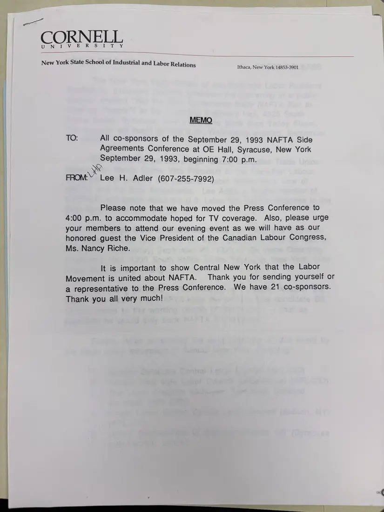
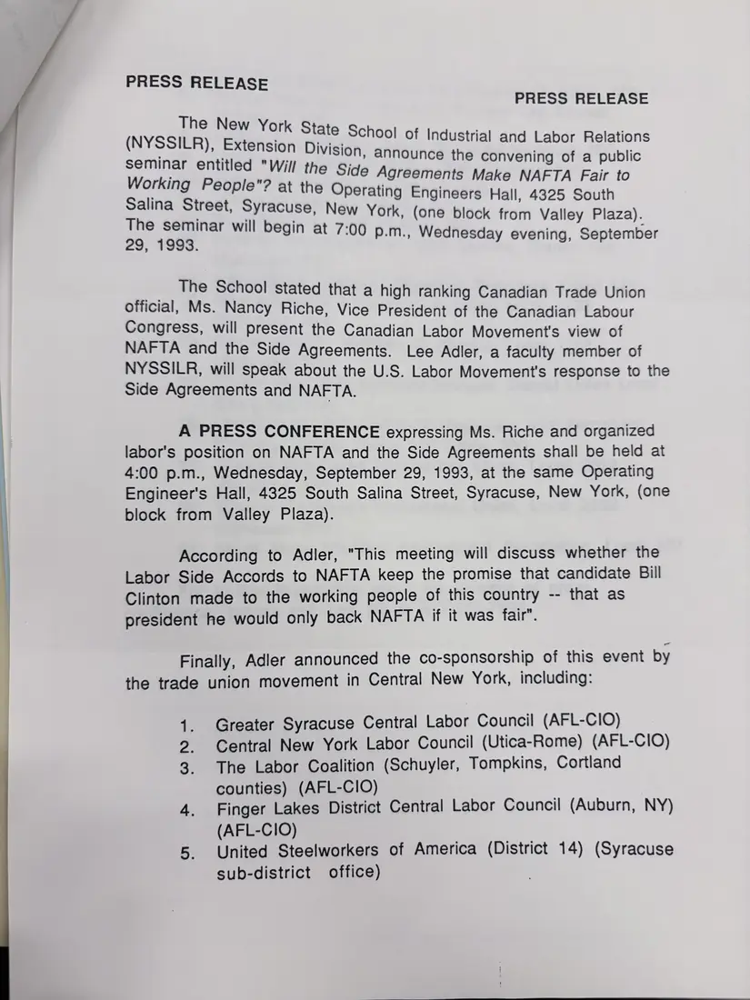
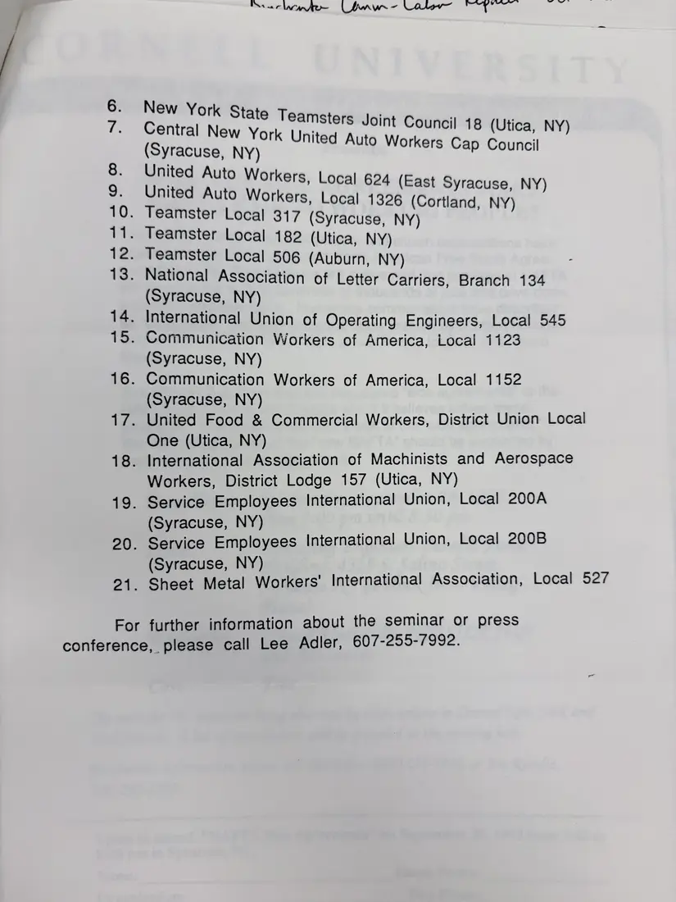
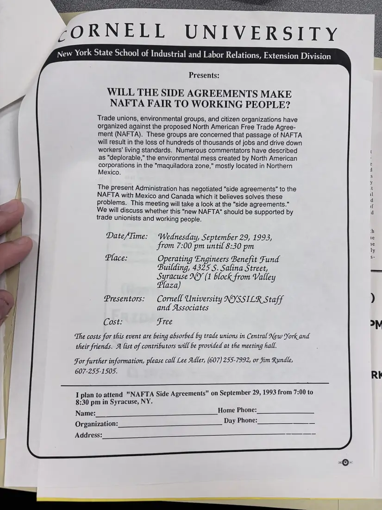

Press release, 4 pages
NAFTA side agreements seminar in Syracuse, September 29, 1993
September 29, 1993
Cornell ILR Extension's memo to co-sponsors moving the press conference to 4:00 p.m. for television coverage, its press release, and the flyer for “Will the Side Agreements Make NAFTA Fair to Working People?” at the Operating Engineers hall in Syracuse, with Nancy Riche of the Canadian Labour Congress and Lee Adler of the ILR School. The Labor Coalition is listed among 21 co-sponsoring labor bodies.
Download or cite this itemPages


(open zoom view)Read the page text (machine-read, mostly readable)
This text was generated automatically from the photograph and has not been corrected. The image is the authoritative record.
CORNEL 1eVeorR OR eS) eT -7Y, New York State School of Industrial and Labor Relations Ithaca, New York 14853-3901 MEMO TO: All co-sponsors of the September 29, 1993 NAFTA Side Agreements Conference at OE Hall, Syracuse, New York meeplember 29, 1993, beginning 7:00 p.m. FROM:Y Lee H. Adler (607-255-7992) Please note that we have moved the Press Conference to 4:00 p.m. to accommodate hoped for TV coverage. Also, please urge your members to attend our evening event as we will have as our honored guest the Vice President of the Canadian Labour Congress, Ms. Nancy Riche. It is important to show Central New York that the Labor Movement is united about NAFTA. Thank you for sending yourself or a representative to the Press Conference. We have 21 co-sponsors. Thank you all very much!


(open zoom view)Read the page text (machine-read, mostly readable)
This text was generated automatically from the photograph and has not been corrected. The image is the authoritative record.
PRESS RELEASE PRESS RELEASE The New York Stat (NYSSIUA) “Extension DINAN rnb rome aber, Feglations : : bas, On, announce the convening of a public Working ian sine the Side Agreements Make NAFTA Fair to alan Be a a fat the Operating Engineers Hall, 4325 South St caltinal satimenine New York, (one block from Valley Plaza). 29. 1993. egin at 7:00 p.m., Wednesday evening, September et The School stated that a high ranking Canadian Trade Union official, Ms. Nancy Riche, Vice President of the Canadian Labour Congress, will present the Canadian Labor Movement's view of NAFTA and the Side Agreements. Lee Adler, a faculty member of NYSSILR, will speak about the U.S. Labor Movement's response to the Side Agreements and NAFTA. A PRESS CONFERENCE expressing Ms. Riche and organized labor's position on NAFTA and the Side Agreements shall be held at 4:00 p.m., Wednesday, September 29, 1993, at the same Operating Engineer's Hall, 4325 South Salina Street, Syracuse, New York, (one block from Valley Plaza). According to Adler, "This meeting will discuss whether the Labor Side Accords to NAFTA keep the promise that candidate Bill Clinton made to the working people of this country -- that as president he would only back NAFTA if it was fair". Finally, Adler announced the co-sponsorship of this event by the trade union movement in Central New York, including: 1. Greater Syracuse Central Labor Council (AFL-CIO) 2. Central New York Labor Council (Utica-Rome) (AFL-CIO) 3. The Labor Coalition (Schuyler, Tompkins, Cortland counties) (AFL-CIO) 4. Finger Lakes District Central Labor Council (Auburn, NY) (AFL-CIO) 5. United Steelworkers of America (District 14) (Syracuse sub-district office)


(open zoom view)Read the page text (machine-read, mostly readable)
This text was generated automatically from the photograph and has not been corrected. The image is the authoritative record.
wesanelatande bon —- Vater Or 6. New York State Teams 7. Central New York U (Syracuse, NY) = Srey ‘utp Workers, Local 624 (East Syracuse, NY) uto Workers, Local 1326 C 10. Teamster Local 317 Nae PEEL (Syracuse, NY) 11. Teamster Local 182 (Utica, NY) 12. Teamster Local 506 (Auburn, NY) 13. National Association of Letter Carriers, Branch 134 (Syracuse, NY) 14. International Union of Operating Engineers, Local 545 15. Communication Workers of America, Local 1123 (Syracuse, NY) 16. Communication Workers of America, Local 1152 (Syracuse, NY) 17. United Food & Commercial Workers, District Union Local One (Utica, NY) 18. International Association of Machinists and Aerospace Workers, District Lodge 157 (Utica, NY) 19. Service Employees International Union, Local 200A (Syracuse, NY) 20. Service Employees International Union, Local 200B (Syracuse, NY) 21. Sheet Metal Workers’ International Association, Local 527 nsters Joint Council 18 (Utica, NY) nited Auto Workers Cap Council For further information about the seminar or press conference, please call Lee Adler, 607-255-7992.


(open zoom view)Read the page text (machine-read, mostly readable)
This text was generated automatically from the photograph and has not been corrected. The image is the authoritative record.
CORNELL UNIVERSITY New York State School of Industrial and Labor Relations, Extension Division Presents: WILL THE SIDE AGREEMENTS MAKE NAFTA FAIR TO WORKING PEOPLE? Trade unions, environmental groups, and citizen organizations have organized against the proposed North American Free Trade Agree- ment (NAFTA). These groups are concerned that passage of NAFTA will result in the loss of hundreds of thousands of jobs and drive down workers’ living standards. Numerous commentators have described as "deplorable," the environmental mess created by North American corporations in the "maquiladora zone," mostly located in Northern Mexico. The present Administration has negotiated "side agreements" to the NAFTA with Mexico and Canada which it believes solves these problems. This meeting will take a look at the "side agreements.” We will discuss whether this "new NAFTA" should be supported by trade unionists and working people. Date/Time: Wednesday, September 29, 1993, from 7:00 pm until 8:30 pm Place: Operating Engineers Benefit Fund Building, 4325 S. Salina Street, Syracuse NY (1 block from Valley Plaza) Presentors: Cornell University NYSSILR Staff and Associates Cost: Free The costs for this event are being absorbed by trade unions in Central New York and their friends. A list of contributors will be provided at the meeting hall. For further information, please call Lee Adler, (607) 255-7992, or Jim Rundle, 607-255-1505. I plan to attend "NAFTA Side Agreements" on September 29, 1993 from 7:00 to 8:30 pm in Syracuse, NY. Home Phone: Names ee Day Phone: Organization: AQUI eSS ee Tre amaxoano:
See something wrong, or recognize a person or event? Send a correction. If you hold rights in this item or think it should not be public, write to the same address.